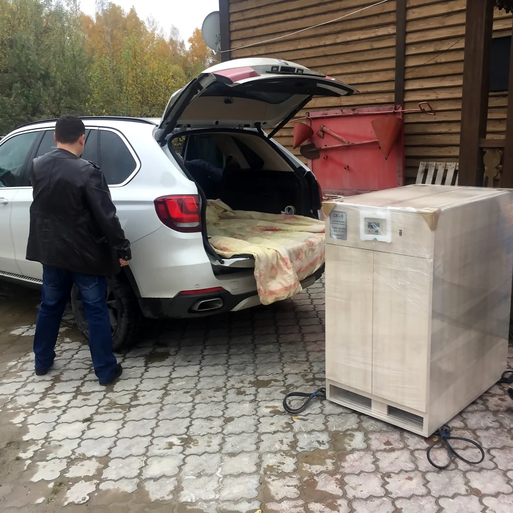
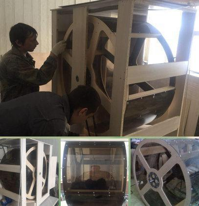
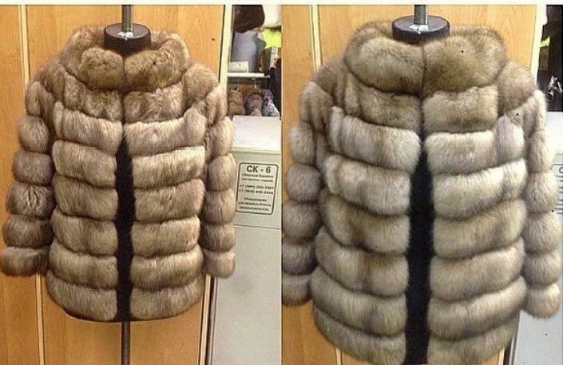
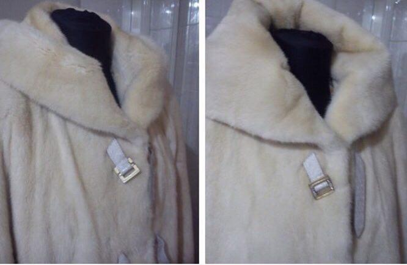
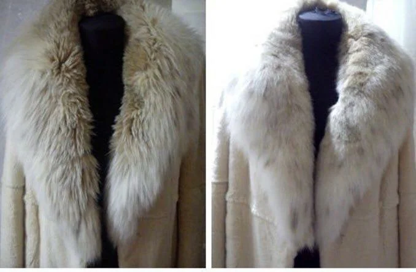

Откатные барабаны для Меха
Что это такое и зачем вообще это нужно?
Меня зовут Павлычев Павел Викторович, я творческий и позитивный человек и начиная с 2015 года, Мы вместе с группой единомышленников занимаемся проектированием, изготовлением, Арендой и продажей Откатных барабанов и средств для чистки натурального Меха.
К концу 2019 года нами выпущено уже более 250 барабанов начиная с серии СК-4, СК-5, СК-6, и СК-7. А сейчас приступили к линейке СК-8. Также на базе этих моделей были созданы уникальные барабаны, которые существуют в единичном экземпляре с различными изменениями и дополнениями по просьбе заказчиков.
Мы оказываем сервис по ремонту барабанов и не только нашего производства. Снабжаем в любых объемах средствами для чистки натурального меха, на основе Буковых опилок. Покупают опилки для чистки меха не только те, у кого есть наши барабаны. А также те, кто приобретал барабаны в других компаниях, а также тем, у кого даже нет откатных барабанов))
Потому что люди, которые занимаются ручной чисткой, также используют в процессе чистки меховых изделий наши средства, в частности опилки, пропитки и концентраты.
Особая гордость - было создано сообщество меховщиков, людей, которые работают с натуральным мехом, у нас Чат в Ватсапе, который объединяет мастеров из 7 стран. На данный момент в Чате более 200 человек.
Приобретая откатной барабан, Вы попадаете в сообщество людей, которые им пользуется уже давно и которые почистили уже десятки, сотни, может быть тысячи изделий, используя Откатной барабан при работе с этими изделиями, на различных этапах и операциях.
Чем хорошо сообщество? Тем, что любой вопрос, который возникает у Новичка вначале работы с Барабаном - уже когда-то много раз, много лет назад был решен сообществом. И попадая в это сообщество, вы одновременно присоединяйтесь к базе знаний Мастеров, которые нарабатывали этот опыт, исправляли ошибки, причём по разным аспектам, и не только в вопросах чистки меха.
Это вопросы, с которыми сталкивается рано или поздно любой человек, который работает с мехом. Вопросы относительно сырья, покупки расходных материалов, различных поставщиков. Вместе с сообществом выявляем различных аферистов и недобросовестных поставщиков. Круто, когда можно задать любые вопросы относительно инструмента, расходных материалов, химии, оборудования, юридических вопросов, бухгалтерских, любых других.
Ежедневно в разных городах люди встречаются с одними и теми же вопросами. Вместе легче и удобнее решать то, что кажется сложным. Когда вопрос попадает в Сообщество, зачастую он решается спокойно и в самое короткое время.
Если в моменте нет четкого ответа, как решить ситуацию, то мастера дадут контакты тех, кто поможет это сделать. Поверьте, очень удобно и приятно быть частью такого сообщества людей, которые владеют и пользуются откатным барабаном.
Технические характеристики Барабана СК-6 PRO
- Масса 89 килограмм (двое мужчин нормально заносят);
- Высота 120 см + 3 см (колесики);
- Ширина 67 см (проходит практически в любую дверь);
- Длина (она же глубина) 105 см;
- Питание от обычной розетки;
- Мощность двигателя 0, 25 кВт;
- Работает тихо (почти не слышно) и без вибраций;
Когда у Вас свой Откатной барабан, появляется больше Возможностей:
• Вы можете расширить ассортимент услуг, которые вы предлагаете;• Может выполнять одновременно несколько рабочих задач;
• Вы можете при индивидуальном пошиве Изделия "Дарить" чистку на 2-3 года;
• Или при перекрое - Акция "чистка в подарок";
• А при замене Подкладки - чистка изделий бесплатно
• Фантазируйте и получайте Выгоду в своих Рекламных компаниях!
Вы можете варьировать и комбинировать, как Вам удобно, как Вы хотите.
Вы можете отгородиться от конкурентов!
Только Представляете, у кого-то нет Барабана, а у вас есть)))
В любом случае наличие откатного барабана это всегда преимущества, это всегда вложение в будущее, инвестиция «в Долгую».
Представьте, что у Вас уже есть барабан!
Прошёл год или два. Сколько новых клиентов и заказов к Вам пришло за это время?
Не абы каких, а именно таких, каких Вы всегда хотели.
За это время Вы поняли, что страхи беспочвенны и не имеют никакого логического обоснования, что на поверку, все страхи ерунда, а для принятия Решния не хватает простого и легкого шага...
Просто первого шага на встречу новым Возможностям.
Конечно всегда есть вариант - оставить всё как есть. Ну может через год или два, сейчас другие заботы... Или что там обычно говорят люди в таких ситуациях?
Вы когда-нибудь считали, сколько в месяц вы "Недозарабатываете"?
Это, так называемая упущенная выгода.
Кто-то "через дорогу" принимает каждый месяц в работу 20-30 меховых изделий. У кого-то договор с меховым магазином или с торговым центром. Кто-то, например, оказывает услуги, просто откатывая Скрой или пластины для своих "коллег по Цеху".
Если этот "кто-то" не вы - я бы на вашем месте задумалсяи Дважды посчитал, сколько Вы не до зарабатываете в месяц.
Если вам не больно от этой суммы умножите ее на 4 или 6.
Ну как?
А что было бы, если бы Вы преобрели свой Барабан год-два назад?
Возможно сейчас всё было бы совсем иначе...
Может быть Вы впервые на моём сайте, а может наблюдаете за мной уже пятый год и всё никак не решаетесь. Всё может быть. Ирония в том, что не принимая решение что-то Поменять, по факту - Вы принимаете решение оставить всё как есть!
Как писал Альберт Эйнштейн: "doing the same thing over and over again and expecting different results".
"Бессмысленно продолжать делать то же самое и ждать других результатов".
Если сейчас вам приходится работать после 18:00 вечера, а иногда может быть до глубокой ночи, то, скорее всего что-то не так... Скорее всего, очень много ручного труда, разных повторяющихся процессов, которые легко доверить Откатному барабану, а простые задачи делегировать помощникам или кому-то ещё. Барабан избавляет от проблем с ручным трудом - для этого он и создан. Просто подумайте насколько удобнее и интереснее заканчивать работу в 19:00, чем работать до глубокой ночи, иногда и в выходные дни.
Помогите своим клиентам!
Вы знаете сколько за год в химчистках портят шуб? Посмотрите статистику, люди буквально плачут...Не везде конечно, но химчистках редко найдете специалиста, который работает с мехом профессионально 20-30 лет и имеет профильное образование и понимание такого изысканного материала, как натуральный Мех.
В идеале услуги по чистке меховых изделий, должны оказывать люди, которые работают с мехом.
Помогите своим клиентам, не дайте им "потерять" свои шубы. Пусть они к Вам приходят 10, 15, 20 лет. Пусть станут клиентами на всю жизнь. Пусть приводят всех своих родственников, детей, знакомых и так далее.
Помогите, просто по-человечески, сделайте хорошее дело людям и люди вас отблагодарят.
В Вашем случае это будут деньги, которые вы получите за услуги.
Но самое главное - вы поможете людям!
Сейчас люди просто подписывают бумажку, что если шуба развалится, то претензий не имею...
Вы можете забрать себе эти Заказы, а стоять в стороне, пока химчистки портят шубы.
Пусть лучше привозят к вам, и вы ими займётесь.
Если необходимо оказывать услуги, например, кому-то по фигуре посадить или фасон поменять, перекрой, крючки, подклад или ещё что-то, первое что должно быть - это просто желание помочь человеку, это основное!
Мне очень приятно, когда в течение многих лет мы общаемся с клиентом и уже это не просто рабочие отношения, а практически дружеские. Когда мы созваниваемся, спрашиваем как друг у друга дела, я слышу: "Всё классно! Здорово, спасибо за Барабан))
Или "Паша, опилки кончились, вышли ещё там пару бочек, сейчас сезон начинается, чтобы нам потом не дергаться".Ок, я говорю - Здорово, хорошего сезона!
Я часто бываю в разных городах, просто прихожу лично знакомлюсь с людьми, с которыми раньше просто были в переписке или созванивались. Это тоже очень классно и приятно, мне нравится, людям нравится - это самое главное, чтобы люди были довольны!
Возможно прямо сейчас, Вы думаете: купить барабан или не купить...
А вот представьте, что уже 3 месяца Вы пользуетесь барабаном. Просто закройте глазки и представьте, что вы пользуетесь барабаном целых 3 месяца. Если вы думаете, что в вашей жизни ничего не изменится, ничего в рабочих вопросах не изменится - даже не думайте, закрывайте этот сайт и не дочитывайте дальше.
Ничего не надо менять и барабан Вам, скорее всего не нужен.
Если вы думаете, что что-то можно поменять, просто сделайте первый шаг.
Помогите себе сами.
Я уверен, что вы уже знаете ответ, что вам нужно, а что нет.
Не надо ни у кого спрашивать, просто услышьте внутренний голос и примите решение,
сделайте, как хотите, как вам лучше, как вам нужно.
У меня есть масса свидетельств тому, что люди покупают барабан за Окупают его за Первый сезон (как мы понимаем это не целый год.
Был случай, когда мастер за выходные принял 30 изделий. Было 3 дня на Майские праздники. Просто человек пришёл в торговый центр, договорился с салоном, у которого зависелись шубы, чтобы их "освежить" и покатать в барабане. Ему привезли эти шубы на выходные и они вместо того чтобы поехать на дачу, вместе с сыном чистили шубы. Если умножить на среднюю стоимость чистки, можно понять, что люди неплохо заработали за выходные)))
Они практически окупили барабан только за одни выходные, я не говорю про сезон.
Если есть сомнения, откуда брать клиентов, поверьте, когда у вас будет барабан, вы найдете их, и клиенты появятся. Вы не представляете, какому числу клиентов можно оказывать услуги.
1. Простой человек, у которого есть шуба (а у многих не одна) допустим это первый уровень - частный.
2. уровень - это коллеги. Есть те, кто работает с мехом, но у них нет своего барабана, и они куда-то вынуждены возить. А тут появляетесь Вы и за "недорого" или Оптом оказывайте помощь коллегам.
3. Меховые магазины и салоны.
Итак, ещё раз вернусь к Пользе. Чем больше Вы сможете оказать пользу людям, тем больше будете им нравиться))\ Люди будут довольны и они будут благодарны, а человек так устроен, что он не хочет быть обязанным, обычно, если я благодарен, я хочу как-то отблагодарить человека. Самый простой способ - это деньгами, возможно я буду его советовать, рекомендовать. В то же время, если я недоволен, я буду ходить, злиться ругаться и всем говорить: "Не ходите туда, там плохо делают!". Но если я доволен, если мне всё нравится, я буду кричать на всех углах: "Ребята вот Эти просто крутые, они классные, работайте с ними! Они супер! Мне понравилось всем рекомендую!». Понимаете, в чём дело? Вы просто делайте так, чтобы люди были довольны! Конечно, кто-то скажет: "Тебе легко говорить"... Да конечно, поверьте, мне не легко это говорить. Я много лет этим занимаюсь, видел разное. Кто-то скажет: "Кочу себе купить, но барабан слишком дорогой!". О'кей, это дорого может быть сейчас. Есть варианты различных рассрочек, можно взять барабан в кредит, арендовать, вариантов много, было бы желание! Цель всегда оправдывает средства. Кто-то скажет: "Сложное оборудование, я никогда не работал с откатным барабаном!". Да никто никогда не работал с откатным барабаном, пока не сделал это в первый раз))). Понимаете, если есть такая задача, то я могу школьника обучить за 1 день как пользоваться откатным барабаном. Не работать с мехом, а именно пользоваться самим барабаном, это не сложнее чем стиральная машинка. Как думаете, например стиральной машинкой может только кандидат наук пользоваться? Да нет, всё гораздо проще! Это как стиральная машина, как простой бытовой прибор. Нет никакой сложности, поверьте. Когда я слышу "Ну О'кей, ладно, почти убедил. Я подумаю...". Да не надо ничего думать))) здесь нужно принимать решение сердцем, вариант простой - он вам нужен или не нужен. Как я уже говорил, Вы уже сами всё знаете. Просто Вы лучше всех в мире можете себе логикой объяснить, почему Он именно сейчас мне не нужен или почему есть приоритетнее покупки, почему это не кстати. О'кей подождите годик, посмотрите, что будет с вашими конкурентами, как они реализуют эту возможность. То, о чем я говорю это просто возможность, что Вы с ней сделаете это Ваше дело. Воспользоваться ей или отмахнуться, решиться или через годик снова может быть, подумать об этом. Кто-то говорит: "А вдруг сломается, что я буду делать, ведь я так далеко..." Гарантия на оборудование 1 год, на см Барабан и отдельно на все узлы и агрегаты. Наши бырабаны сейчас работают в 5 странах: в России, Украине, Беларуси, Казахстане и в Киргизии. Если что-то случается, есть отработанная технология, как дистанционно решаются любые вопросы. Если Вы случится "что-то такое", чего ещё не было ранее, я готов лично прилететь в гости. Почти всё, что могло случиться, случилось уже за эти годы и наши специалисты постоянно улучшают качество выпускаемой продукции. Узкие места, недоработки, слепые пятна, мы постоянно работаем над этим У нас за год проходят 2-3 улучшения на каждой текущей работающей модели. Так что если что-то могло случиться, всё уже случилось.
Переживать об этом не стоит. Мы научились делать такие барабаны, которые не ломаются. А если ломаются, то дистанционно чинятся и настраиваются. Позже Вы узнаете, как нужно обслуживать барабан, какие условия должны соблюдаться.
Это как с машиной, если ухаживать, следить, прослужит долгие годы, не переживайте.
На сегодняшний день, на ноябрь 2019 года, мы собираем месяц порядка 3 откатных барабанов. Так я могу лично контролировать надежность и качество каждого из них. Иногда бывает так, что на них очередь. Если у вас есть желание или просто вам хочется больше узнать, спросите, я с удовольствием расскажу. Если вам нужен барабан прямо завтра... скажу честно, не всегда готовый барабан есть на складе. Иногда, особенно в сезон, на них появляется очередь, и люди могут ждать месяц или два. В наших разработках мы учли весь мировой опыт, начиная с опыта советских инженеров. Как бы там ни говорили, эта технология была придумана в СССР. Далее уже иностранные товарищи, занимались этим вопросом и есть миф, что это оборудование пришло с Запада. Возможно кто-то видел итальянские барабаны или греческие. У нас огромное число умных и образованных людей. Мыживём в Протвино - наукограде РФ, здесь число умных людей зашкаливает. Каждый раз я приглашаю новых специалистов, с которыми мы обсуждаем различные изменения, доработки и это отражается в том, что выходят новые модели. Мы улучшаем то, что уже работает, находим новое и постоянно стремимся к улучшению внешнего вида, работаем с габаритами, с массой, с огромным числом параметров, которые может быть не видны обычному человеку. Мы фанаты - мы реально любим то, чем занимаемся. Нам это интересно, мы это очень ценим и постоянно развиваемся. Меня иногда спрашивают, как я занялся этим. На самом деле всё началось в 2014 году. В конце 2014 года я познакомился с отличным Скорняком, и он предложил мне поработать вместе, а я до этого ничего не знал о меховой индустрии, я работал в области продаж. Я одолго стоял за спиной мастера, изучал, смотрел все процессы, которые происходят при индивидуальном пошиве меховых изделий, в ателье изучал различную работу, смотрел на оборудование, участвовал в разных процессах. Тогда я предложил продавать не только меховые изделия. Изначально была мысль, что я нахожу оптовых клиентов на пошив. Потом у меня возникла идея, когда я увидел старенький самодельный откатной барабан. Он был из фанеры, я не сразу понял что это за ящик))) Я спросил - а что это? Мне объяснили, что это такая штука, в которую забрасывают мех и через 2 часа он становится дороже...Я увидел в этом потенциал, сказал, что хочу заниматься этим направлением. Затем разместил объявление на Авито "продам откатной барабан". И через месяц мне позвонили из одного сибирского города и сказали, что хотят заказать барабан и внесли оплату, насколько я помню, аванс не полностью всю сумму, что-то порядка 50 000 рублей. Я сказал, что через месяц мы отправим откатной барабан и начали собирать Первый барабан... Но за месяц мы не уложились, приходилось переделывать помногу раз, какие-то простые вещи. Представляете, за месяц взять и с нуля практически собрать, не повторить тот, который был, а сделать новую модель. В сроки не уложился, заказчики начали угрожать физической расправой, что в никак не ускоряло процесс сборки)))) В конце концов, всё-таки собрали барабан и поняли, как это должно выглядеть. Угрозы становились всё сильнее, это сейчас, об этом, смешно вспоминать))) тогда не очень было смешно... Барабан отправили, а деньги за него мы так и не получили... Вот было прикольно! Такой вот интересный первый опыт)))) Начали развиваться и существенно сократили габариты, улучшили внешний вид, массу изделия. Барабаны люди покупали в 2015 году за 95000 руб. Сейчас мы нашли способ, как делать дешевле. И опилки, представьте, тогда бочка уходила за 16000 рублей, это всего 1 бочка с опилками. Сейчас я могу сказать честно, что она стала дешевле в разы. То есть всё для клиентов, всё упрощается и упрощает. Вот как-то так вкратце про то, как начал заниматься и приходили новые люди, новые инженеры. Были инженеры из нашего местного института физики, сейчас с нами работает инженер, который работал в корпорации "Миг", собирал самолёты и так мы перешли на более легкие материалы, более устойчивые к химическим средам. Так мы отказались от фанеры, и перешли на специальный пластик. Так мы пришли к заклёпкам облегченного варианта, и ушли от саморезов. В общем, делаем все, чтобы оборудование работало дольше, пользоваться им было проще, внешне было бы более красивым. Работаем постоянно над развитием. П аналогии можно сравнить с автомобилями, возьмите Volkswagen например семидесятых годов и современные модели. Мы пытаемся работать в этом духе. Нам очень нравится то, чем мы занимаемся и хотим, чтобы и Вам в вашей работе нравилось то, чем занимаетесь Вы. Если у нас получится сделать Вашу работу немного легче и лучше, будем считать, что мы достигли своей Цели! Спасибо вам огромное, что вы прочитали мою короооооткую статью! Я пытался коротко рассказать, что такое Откатной барабан и зачем он нужен, опуская технические подробности, коммерческие вопросы, логистические, доставку, химию, работу с клиентами и т.п.. Это всё, детали, без которых сейчас вполне можно обойтись. Но, когда вы станете счастливым обладателем откатного барабана, на все вопросы, которые естественным путем у Вас появятся, я буду с радостью отвечать или мои коллеги или специалисты из Сообщества.
P.S.
Смотрели фильм НАЧАЛО?
Там есть шикарная цитата!
Какой самый живучий паразит? Бактерия? Вирус? Кишечный глист?
Идея! Она живуча и крайне заразна.
Стоит идее завладеть мозгом, избавиться от неё уже практически невозможно.
Я имею в виду сформировавшуюся идею, полностью осознанную.
Поселившуюся в голове.
Звоните, нам есть о чём поговорить, давно пора!
8-968-446-49-44
С уважением, Павлычев Павел
-

Откатной барабан "СК-6-PRO"
-
Универсальность габаритов откатного барабана "СК-6-PRO"
-
Грузоперевозки транспортными компаниями
-

Производство Откатных барабанов серии "СК-6-PRO"
-
Модернизация Откатных барабанов серии "СК-6-PRO"
-
Директор ООО"Протландия"
-

"До" и "После" - результат чистки в откатном барабане
-

"До" и "После" - результат чистки в откатном барабане
-

"До" и "После" - результат чистки в откатном барабане
{kind=link}
{kind=link}
{kind=link}
{kind=link}
{kind=link}
{kind=link}
{kind=link}
{kind=link}
{kind=link}
Теперь Приложение B-16 у вас в мобильном
Добавьте себе в телефон значок сайта (как закладку). И у вас в телефоне всегда будет кнопка. Это новая технология `Progressive Web Application`
- Позволяет сайту работать, даже если в телефоне отсутствует/пропал доступ к интернету.
- Иметь кнопку запуска сайта с экрана телефона(без необходимости открывать браузер).
- Работает на iPhone/Android устройствах.
Подпишитесь на нас в социальных сетях:
Наши видео на Ютуб
мы Вконтакте
наш Инстаграм